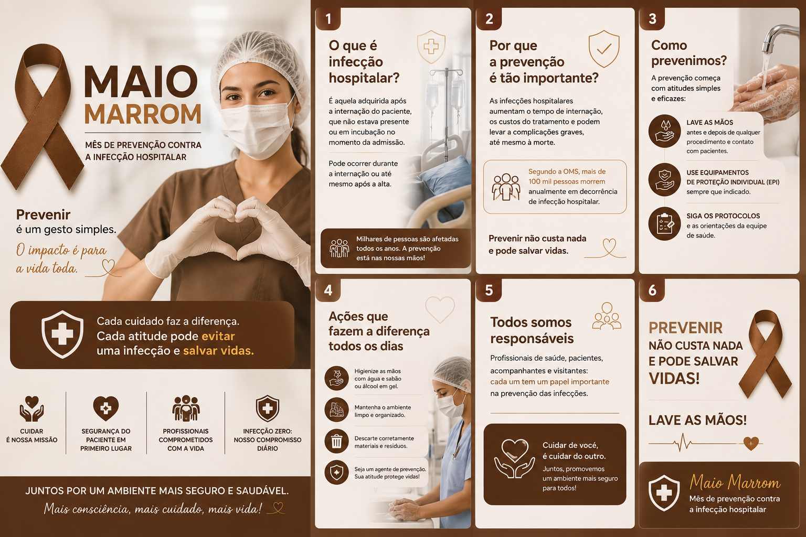

Maio Marrom - Prevenção contra a infecção Hospitalar
A prevenção começa com atitudes simples que salvam vidas.
A higiene correta das mãos, o uso adequado dos EPIs e o cuidado diário com os protocolos de segurança são essenciais para proteger pacientes, acompanhantes e profissionais da saúde.
Neste Maio Marrom, reforçamos a importância da conscientização e do compromisso de todos no combate às infecções hospitalares. Prevenir é um ato de cuidado, responsabilidade e amor ao próximo.
✨ Lave as mãos. Proteja vidas. Faça a diferença todos os dias!